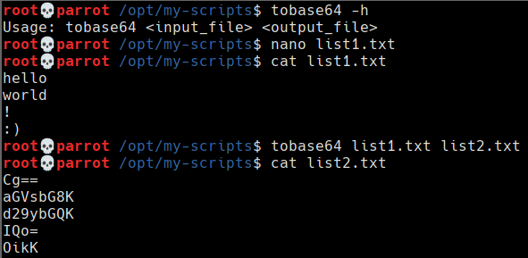

tobase64
11 julio 2021
tobase64 es una herramienta sencilla que codifica cada línea de un fichero en base64. Ha sido desarrollada para convertir un diccionario de palabras en base64 de forma rápida.
La herramienta está desarrollada en bash y publicada en Github para que pueda ser fácilmente descargable por cualquier usuario. Su uso se explica con el siguiente ejemplo:

El código de la herramienta es el siguiente:
#!/bin/bash
if [ "$#" -ne 2 ]; then
if [ "$1" != "-h" ]; then
echo "Insufficient arguments, expected 2. Use -h to see help."
exit 2
else
echo "Usage: tobase64 <input_file> <output_file>"
exit 2
fi
else
file=$1
file2=$2
lines=$(wc $file -l | cut -d ' ' -f 1)
touch file2
for (( c=0; c<=$lines; c++ )); do
line=$(cat $file | head -n $c | tail -n 1)
b64=$(echo $line | base64)
echo $b64 >> $file2
done
fi
exit 0